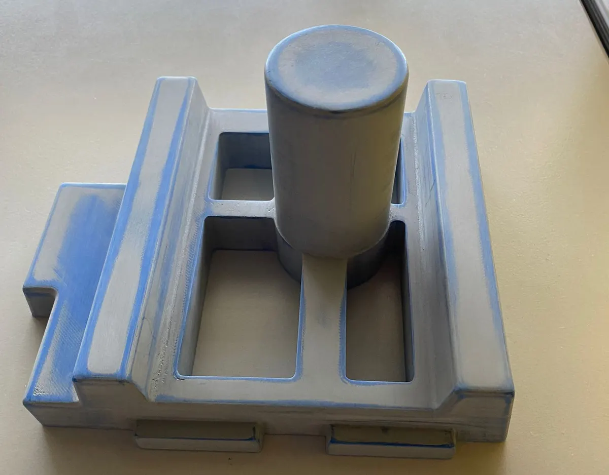
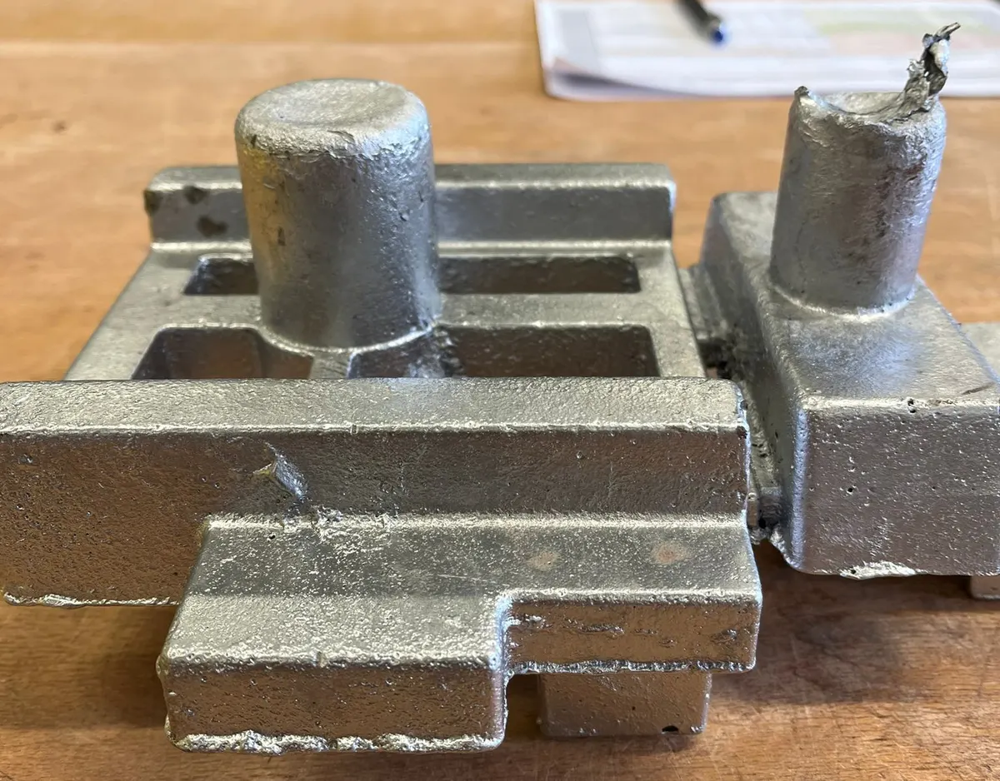
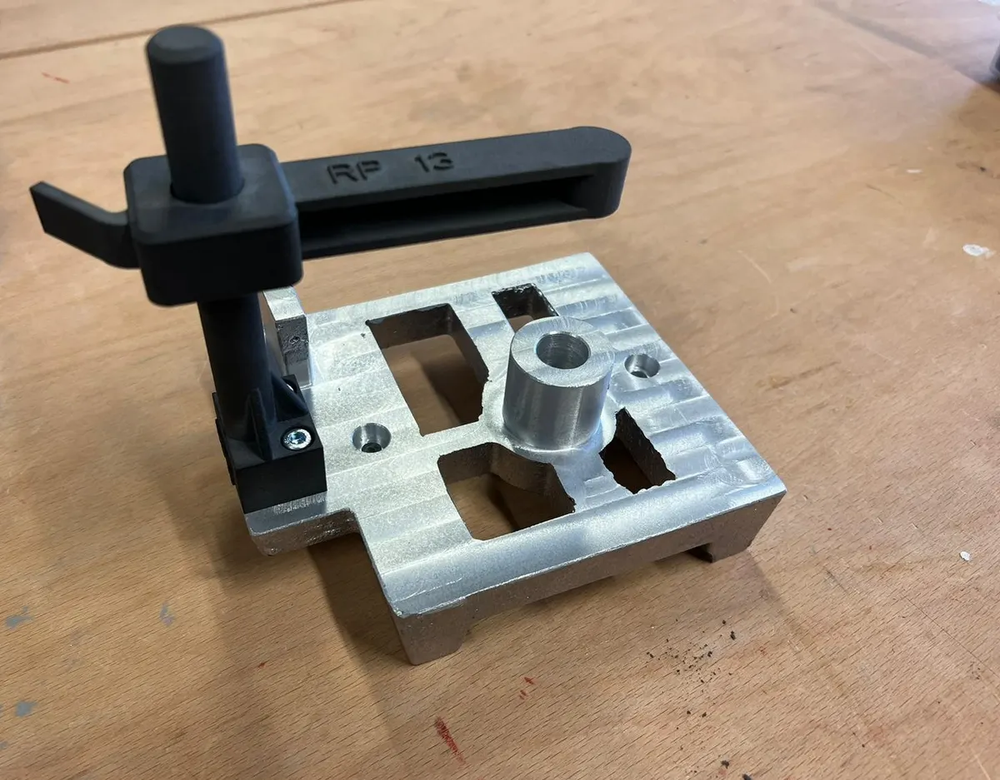

Aufgabe
Im 5. Semester haben wir zu siebt eine Messhalterung für einen Turbolader entwickelt und selbst gefertigt, vom Entwurf am Rechner bis zur Messung.


Mein Beitrag
Als Verantwortlicher für Produktionsplanung und -steuerung habe ich Stückliste und Arbeitspläne in Infor aufgebaut, Fertigungszeiten erfasst und die Abschlusspräsentation übernommen.

Ergebnis
Im Team entstand die fertige Messhalterung aus Aluminium mit einem 3D-gedruckten Niederhalter.
Team und Fertigungsplanung im Detail